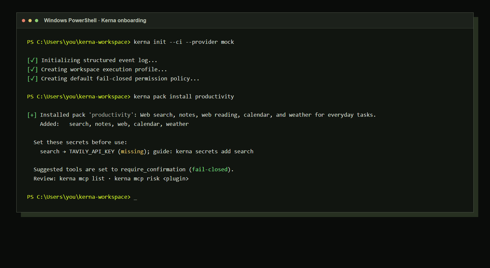
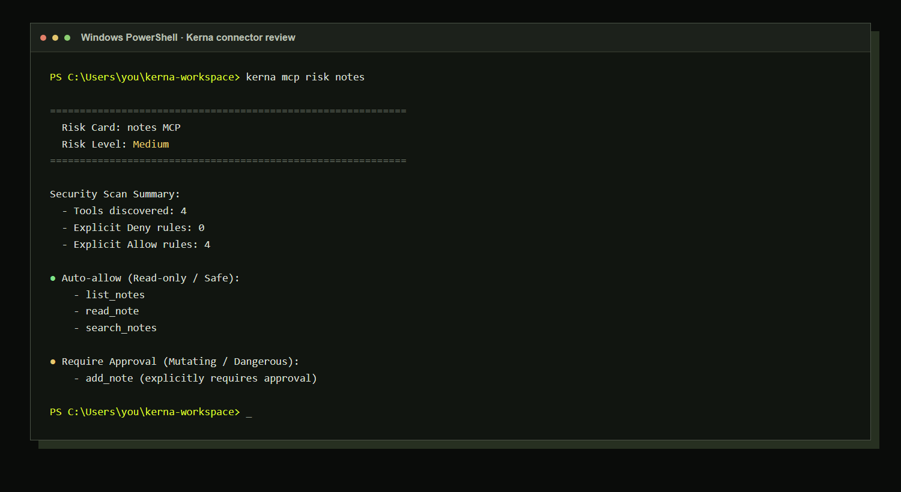

npm Publish required
npm install -g @premxai/kernaNode.js 16+ on Windows, macOS, or Linux.
A trust layer for AI agents
Kerna connects your models and MCP tools, stops unreviewed actions, and leaves a readable receipt for every run.
npm install -g @premxai/kernaNo account required. Your workspace stays on your machine.

Install Kerna
Every option installs the same verified runtime. Copy a command, then initialize a local workspace.
npm Publish required
npm install -g @premxai/kernaNode.js 16+ on Windows, macOS, or Linux.
macOS / Linux
curl -fsSL https://raw.githubusercontent.com/premxai/kerna/main/install.sh | shDownloads the matching release binary and plugins.
Windows PowerShell
irm https://raw.githubusercontent.com/premxai/kerna/main/install.ps1 | iexInstalls into your user location and adds a PATH hint.
Source fallback
cargo install --git https://github.com/premxai/kerna --bin kernaFor unsupported platforms or source-based development.
Create your workspace
kerna init --ci --provider mockStart with a deterministic demo provider and fail-closed policy.
Install productivity tools
kerna pack install productivityAdd local notes, calendar, weather, web reading, and optional search.
Policies, receipts, and workspace data are yours to inspect locally.
Ungoverned tools do not run. Consequential actions pause for review.
Use the provider and MCP tools that fit the work, without giving up the guardrails.
One loop, made visible
Kerna is not another chat window. It is the narrow control plane between an agent and the tools that can change your world.
Describe an outcome. Kerna discovers only the tools your workspace has explicitly allowed.
Policy, scope, and budget are evaluated before an MCP tool ever runs.
Writes and external actions can stop in a local approval queue for a human choice.
Review the outcome, decisions, and trace without treating an agent as a black box.
Approval is a feature
Writing a note, creating a calendar event, or reaching an external service can be queued for a clear, one-time decision. If the answer is no, nothing happens.
Follow one run
First useful run
Start in demo mode or bring your own provider. Curated packs keep local productivity tools close to hand.
Start with a bounded job
Explore read-first workflows for meeting preparation, research, and a calm daily brief.
Explore workflows